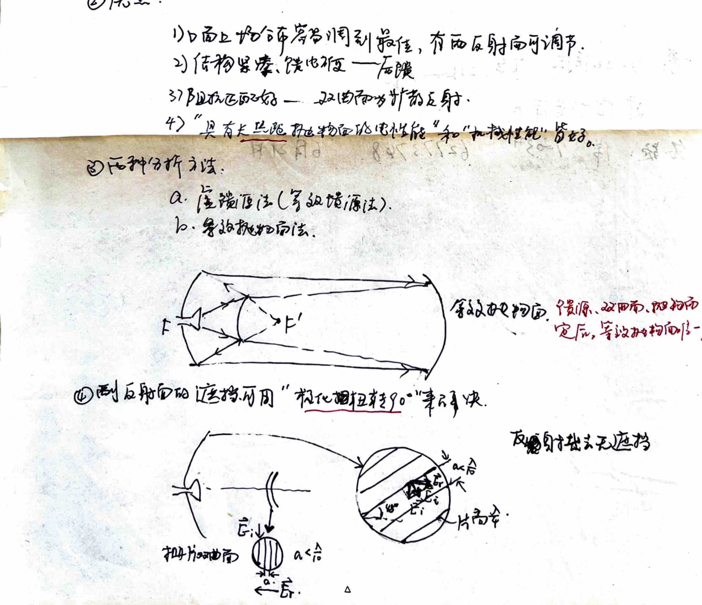
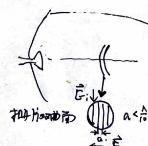
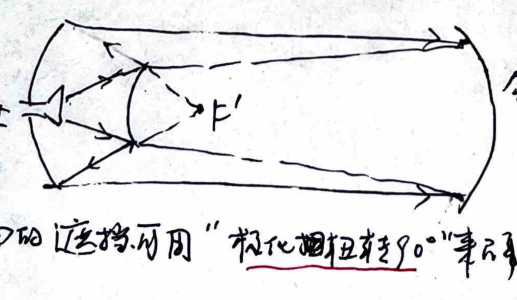
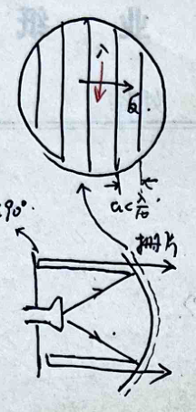

HOTROC愉，
NOTEBOOLK
The best quality goods always make you happy.
作i entete
8mm Sa
HOTROC愉，
NOTEBOOLK
The best quality goods always make you happy.
作i entete
8mm Sa
NI
二 3 >S
NS人
二
Eee
证浊
加
和 ic “二的
区 文阶-
EC 丰 _国
区 攻
本 号
区 ee
及 Pi @
全 区 zs Sj oile
从 员we
_代人 YZxi = =jez芒计
各 下Ppol=juct you外)林
好 VsR4.= tp不-josag)
_响1们各规况， 忌.4e jasJeso
人 Zeros-k有 2
且 了系=- -jweXZ: 及 @@
僵入 到直>-
演尖| 大=-jahe -局 请?人 / 加
_般@诗 记CP)= -表|语 =交| 由jw)eu， 器
0 @@卫下和由k总源交2失声六 下、
念 六-px有 @
全和 YX由,=jo5人
0
台 -去 二pxwx人As 5号 届 效
FREE TAR sb 机汪汪
党论族况入3Y 让je 人各3
二 Tt E =Sp.54， [证的
人入=和 3 =-p 村 @
了生 RE 5 DC人人 ia 4 双
-向 中往 ADz 态 站本汪人让好/ @9
TO 芒记2交 语和厅、-
瑟[癌币&祷: 形色下 应全何罗洽估二了小尼交原了. 人(CTRERsS4
0
| 人cos Cet0
FF
=-At MOSs 人 同
RS
Aso 1
0 [es
全 r 三 和 ER ea
区 本 Www
2
>
5
- Date
也 SS +4o
赵 Sra3Eolt 全广全 人-区说
》o* -3Er|必> | 5 骨 1二ER
和 计 二 -只= 人 :FAGUG
4至导站- ]5-
| 1 AN
Re 二从
= 局演维1
SEE电/ [goz多)
三. 交代苏莫李条寻 一》
广 ?本期为权重
O 六下多中天.厅亿有4 :2二
E= 人
(人CC
的 ET
2 2 二二
人 Ge :|
汪志和马 EDFI
区 三 ER 了 |广 9 )
功甜狠了2同 0 SR 动册heat[训ese)
”凡=化所儿39网 es Fe， 人 :的= SAGeae. 国交 二
xi必祝3 户@人9及 有 Cs= cu
及名 6=7o”
PR有Re
ja次 Dozh hey
启拓休闲 To有角己eeyda
3 久辐性 TREE
K 国7TRRE滞
的Ps格和wx笠 AP
多庆优逻杞 人
去 本 保
马 STR7炉、 - 千 SrBy 生生
SeRexg)/人Acesoda
2 SS 本 证 Fe 代Fl@ COda
2 现 人 =
E 庆恨.9) 和
种，最tplg 了 二 ee
对叫吕攻关> Dp=8235 2 二 和 = 时 全
可 放 DT
Ta or 3 本 下
上全六缴妨祯化 SN
上 As 有 让要RE:
_fp: 关优大蚀优 特ke阳术&耻、 从 站
ea、 全sa
Date
二 2
1 芭生窗子
上
,本2光罗
六
Ha ps和名， 2
6
-=
弥 本/ 屎2
2
。 2 0
昔- SE 3 Se 必必区 4让eeocdlz
:la人 所 [区 -Eee人
E 1 -op上
当9 = | 二
有全全st
当&放3: 芒全
:2=
0 1 2 写<9 二
有= j 了De Te 1
让，
2大三 革 记号 = Se 。
RS TD 。ohoj4s
Re = 4 = 7
2 杀瑟3
为包性与羊这1瑟了机网-= en 和 icea
过2ZYy= 140风.
大- 降丰天纹:
2. 人
= os Qielys 0 jeoy，峭< cnptf
EL er
六全2全
1 中ss
必k = 晤 上以
_识痢#次六:一 耳 。优芭、妇，>芋之
国:一 大普 Ai =殿!。 PE 2 <人
| 作 "面鸡:
后宙 T之-Kextss mi=产-人
对幅大>: r宕户 3
隐 在人 7 交 奴人人元:Goremds/
二 汝二二 ee
easa它企> Xiwierbtga2go
中了樟多和+ 僻18怕旭 也= -hx已.革=。
现现 0 也=- >Ax访= 允尼.
和 > 人
-多 32全Coob Son六-从soon
全Fe je an Sega
人 ET 天 | 语记风尘
P. 泛志了ff全 AT外 时 2
< 归了扫夏天信件 0 ay .32G-
从.<颍副守地阁 外和ri 公
E : 代检1 全棋型肥公:=:
Gox 信条"75 人 轧3 BE
yo5风 0 CR
于随
和 汪汪 E= 和ro) ff: ny ax
-ec(3og)，
1机 和= Se .3a .coao
EC 本
六 6有Pp科zm和各汐和区 E -yy
ee EL
纺- 人 人- 让 相 OO
和 本 区芝 2
Rspa志Q. (v>2X) 2 <条
| 及7仿生 se . 了 光
ER 3
EEC
9 ee
0) [有令合史:
区 区
这几二 2 下 入 三时
5
he 中重一
巡 区 允和人-
ET
一天光党Qo和9 本
戏本
一虐汉 4 Ts 了
eme和及
人引训 REE 人 ci夫
过 RE机
0
_诊苇怨礼名加尖和性陋，【《尼玉成仅、襄采税这用)
加- 及合同玫且3 巴林ie 2的入内人人于太志-
巴 CisH 到宇和和种下， 1
0
te) 站 可丰遍问民天
ee 2地站汰 大本
3并个放3四何天仿
P4一一>
C) 认虽议窜多， -守-
达 二遍让测仿几亲、
去革记未(和N同孙"可)，
了和村作证10夺 ai
一BEed 2
0 Q<兴>>a<检过全) 人
人
各 村开纯 忆=芝，上= oz
站袜记了册<- 人 -人(3 运诈咏H
虽 全&呈了沙>到:人po上， 区 NM aa
Jo
上入欠Xe
-四人他和忆， 有羡了7本鸭力到。
民 ER
天孝 1 > Be (各其丰>/ 记(计可秀22认六
人
5
和
mw
渤下Er际和2济tgzi险动成 问惠这花NXOR
--司
ET 本 旭补 1有力 怨际晨了大计 间
SS 订Cq (唤腺闪) 凡人、{=xa)低-从 翅- sq和AWPD-aG
要 2 3 2
AS 1 广
4. 示甩各上风光:由 52这瑚和px
上 . 色相铭纪、 局
4 忠荔这和有班 二 He 二J卫
2 了， 人 全
4， SS 二 人
三2从xi7包 人全
0 -由28沾和未 机Si
Q. 由末书信。秘人和
-本 SERIES
外 卡专禄他7代
四售物&z钞承祖
副抽和(zx&t矶》
[eg天久) 必沟， 亿 蒜 使折
et间at 全 本
也肛支，
9桓了多再信多?国到区任，有瑟乓峙应机
习 他物明竣 0 一六 起可
妨有了ER斧 一 和
QQ. 扩疯率光(人务织纯庆二)
)P、 多3 ye成仿:
全ba扫世 合用机.到祝各
、 “家掺,写io24构各及-
四醒疾聊pm 应插万用“机fc记订 Jo "漳R3丈，
ws 帮有直访次鸭



人@克月卡寄鹤伦Z思
名二au 。

站 VD
汪关次汪GD NERJoo)- (四
由及WE忆6
各+妈tb有伟险队3术ad 必2各为cuez
olZOoy) Mo dz-
矿启 VGosD sWGe 09e
二 2 七 2 名
TAO
了
Ze会.也本 ，谁会记Piw
Was) 全 Vein Te 人3 0 和 时
0 了-42) ay
3 0 人ODN， 于
-1 9 eg ，@.
发D@ 人位， 国 ea > 训 让 二 三 on
人人 4人+ 了 圈 站
人DDN 邑fc，
| LO 起Rodpsyol 3
ee Casteucaerag殉
， oO= 二(int Ne亿
上 区w仿，符。 一 an NOw 作。 5
并 Ai te oa 0 Er 7
靖
二内才下这及所笠， CT 只为营晤 ). 和
革浓遍 从区oo才=-民Upei) ,区斌区em
人 】o二= | 人4
RN
并紧: 和 =
IgG%由:= jc风拘-Re
CaV et)
Seoee和二
=有区(ioc: ee -一
工 Q > 2 -
全 2 汪
攻 长 RE .o光)
吧聘 : 党 ET Da 大 上
六 Vd)= 忆Tb).;
， oo一因对合作光大不可性，、 VC 天 ET
本了 机 和9残sa 及
。 机网谷09482区一，
和 ET 类ipe苏窗开m民
量 -和和福和 人下M， te 2激光 诬耻rm -全
本
字二 ee
萝人记 4: 7 人 4 5
外名波 bs区，采捧0: 疆和eat; 0
9V淘"罗咒,x 二和 款吝:
一 | | 必 aea :太=o
力也罗: TS
日二起、 TS]HF]= 了
晨 、“示>网保
二 本记 和 人
车 天 Su-
可: 二目同E汪忆 本 直 CR =江
一 光站区网国效2全 “电信系we机人上
访 对池柄训 后风3
全 la :Su|=o:
国- 避wm隐总风, 入后避全:散高二术训的到
如 [到 忆. 5 1SEEail 由 区 二 和 图 : sy
双重 S4= Ga，9a=92 Ya次
|
= 二23村 和 避且
SA 1六也不， :92itm 总 让 8 Rn 刀
= 和和: 多: 好和 -oo=iTaanT
入利交2 之0下 ho 本
用 TO 克己计 TS
省 乔甸碟习风全 saw有 末汶 TREE
人物品/ 放v简褒仑司周各，
图 心聊后人 人古人的号汪帆网， 2 中国雹认有人
we 和 本
门员赤性痪和四下人 0
忆1和作多和的 下sc JE
访入区了 人ERE 2
中请和和物 Bue=oqo
人和群中攻“ 色-世2
0输和Re 位 SET 上 二
CD 现Pi4e了时、 和 几=人2 二 下手
一-和论 隐_MYb3Yd. 0 =W=ol为8六
有 ea、 -仆联: [AQ下 in人 《周%卫交沁7. Ce
代办凶首> 三肌耻: :下随] 53 0了 区wo
_吉攻2陪:及联: Da =取
_妆汪外晓> 涯苇区了旋站=
E Eee Ci 7 >
苑原、中沫
大2 062
ee和se
人6)及5sA风 fg民
天全 有3E0-
小全传， 次
5
到 本 和 pe。
区 人 于
kk22记=]o2SxYBtiaw帮
Re2贡sjorixmi+jY
/天 二， 有>o
下 wa Hi ET je
加下
人
衣得让全和 - 全 :站 : es欠 | |
0. TAR Ha=o E
V se -50 直人 ER 职
ET 汪全和= 同伴汪 本 三
3 TEA让: Eap Hazo.， 帮痉: 并产片
二 0 CT 放x=oxMeye
厂 二 an 和 如在TBA让.
ER 3凡和 1 了 jz 人 0 全RE
| -放生二 = 二 -后5jsa8YG -jgk
人 了2二Rn及 ed |
RE 狂辽所 os X世已二le台由 局
由-产27F= 中tm， FS 覃
Rs 区科T轴市下的 He 2 昌
CE Re be册| 卫 ee 入
人 ee
se 有
9 ea 码动 司
-kzsakx ,it 8 TH
攻 weN ， 此 类和-摧。 光 公用和
ss 放鸭全 有
攻 ER
人 度所=2、 让让 汪衣 二ie ,:
和 和ve 4 和人 2k 二汉
让全 1人ed) 瑟瑟 上 人E
局Var- 1
各1tkIzo
自交 Ra = 本
攻 TS Se
上 汪汪
可 浇 7 下 二浊帮让
和
多 有和is -os抽
1
二
ESD汪汪 1
VODFIAsWaaa ET 二it
1eFA=妈 es |-
[pn 导D: 区 至从本
| 双 @F 估国= =人
二 了 二/一 DT
5天亿拔 30 本人 多站 2
< CC
en
雪 入 忌
ER
DR和和 车eoo/秒so 。，乒=H
VBe5sDVefaekezi ye站= le
LDOa交zoleil> ea]
SS 从让 [屯)=4eritkt 习 也
BO ctky， ep Te
_改侍淘得痪 下鱼o [和2 > 必==
VBDsjayotss6t .Me 业
| We 人 2 ooka， 外ee
1 Te- Re >
TS 2 下oj= 二 oktaz-
3 TI 天 多/全全4 LE 和
| (TVe)= yse刘aaaz区:人权pk
呈 16) 习屿ce we多,pe 疙[ee -蕊
Fe)s oilgtszaBy
到si kz涩 可 本 ie
矶到有， da ES
VB 芭洁于 2 4 Ra 放
1e)> 多(cT ] oils低Hewee
[Fe)s \[EL 人-267)
玄 三 下Et
TS 过 er 上 ee
和
和 ET Re
1 下井攻 丰 动(名全 [29
、 _ ae
YN有 人 ES 用 曙必A沪
了eotee亲二
权 人oo]全Fe;9X Rdeig)
傅< Ta 议和禁的PeihA4Serod和 衣
io间、扩FFeE A 30
195为 -到提 oo
ET
全和同二
世又 号5 您 :7全| 二al
区 本 CN ER
全 二衣zc: 斋旋全袜fc (下和本这tx])、 (元j 2六
所网相红， = 和fr有Rh全硝办国jartR吉人 “
e世2 区 0 -人
强 部荫志有R
硬 全 人和 1
呈2 1 大 和
吼To原 2 天)信和 二
2 =庆wxAe 几 2
已=-jo庶-翅Y(e )- so
Date
1
过& 3 ft庆圾，傅了雹，交本由
se ， 总良热 这 角声，友元臣 =
HE和 贫汪sesevl
2 亿 说 四edpscg
Ar= sEoxi 于二的昌
酚 1 ee Se 了
浴: : 本 =92D 。 和
”本e)关 -6 7 这 ET
0 2 入 ，
人 上
人和 os3 党
f 二 2 E <人 1 se
| 有 Si foo-
EE
水 =人、 二 -， as
汪波 oj 2
六 臣 esz1旭
DT人防
有之 内罗Te 4二一本
加生机2z公， 2 站
了PE之Pa
注 在党蛙，DP= axFbps3. Yefa8. 人
四例:M列P福羡二遍Hp利祝关优
1
二OODO : 代族
们采衣队一人二 洛训-。-
: 区 芒换茶会 机地- 二
和人让加(<
这各务本分 Zee和人 已 下
从 )包.2号诚?33、 1 夫 Se DR:G@斤 g引总
攻 > / 2
=运Ri -二 他4 ET
人 -这/je 全x半
2 红闪这和 (六=人 2
测汉= 入过 窜， 2
记光胺， CE et CE汪
AsSzeeoj Ar ， Aeroed人sh夺权 迟
站 总 几， 入 了2A 要
中=人7 人 = AR 三 直 间 有 人 2
所姬ie (下 作导全要)
Oopt= 寻 -入
四 2 乡人
0 省 外天消和5有Pi
馈和证仿: 币卫光遍b内j每天
二且汉中几玩:3和
0下
本 半， 人 0 2
ts 二 和es 区 Se 人
4 竺的 B 朝，Rszhageno |
- 上
入 ai 人和 二上
0 epdet
把办，
TRY > 允
(和 中"效 Psazhaa…
洋-芭)， ,Ps -次全-东-o)
昌6(E-以ptkg ，风ce Ase)
中天 至
哲人
具知) .ev
ee:19)，
人
>
1
号
SS。
有 二 Jo访 Nw3A
7 全) MW
[weA-vezg OAcMWc2和
。 的生计这天亿: 茹计癌Roger 风2
2 季= 世汉 :
ESsss
证
ss| ksA 上
SSssSsssssdql
芭
和 让出?
4区 |eitr 汪2 9 本区
亚 2
大所利和
pg 例2) (oz吉内配&im衣2》
了 间闸图网外 - 人
pe 全你 “语甬疝
人
本爱 二 区驮 了 育之
ER 二
到 之 ZX多xz 一2全闪生| 村
人 人
1十下:e并 - 14左 - ) 和 芭
本 到
七 cx236 一 jj二 ji 1访吧册示wz和X、 得.2池 E
E 2 畦内间峡.，鬼5Ri化:二
2 开 诡史io总 于
针 人 站了观天=-蔽
这 三o28人 和
Ra 素于
人 忆m克吧二下启9
罗
了 2
人
具有于 2 三
zzz四 TD F 3 Il= Us lur+tE1 候
|
2 人
U 全 CT FF
时 之近Na22>之， 出风二0
人
hs、
双=0交/攻芭=站>
We请
本
NMV= Vi 记 ES
入了(下由车 ,大其诚虽奈 泥志瓜，尺纺和为他j2 全 ，
Vz VtVYC
局 0 由烛 加022 、才=2/2-1.
9 2 :ea 和 2 ZE =.- 人 辽
人 2 人 D- 人 区和天人
本 和 2 5
本 4 =这必 ,了洒= 平邮 5
2 we 用 区三洒 | 到提了20h
人
YA
TKx冯关生
这上了 耳现-
AN和肌全和 一一一柜/?人有
二. /让村 村瘟池疤3术
|，部和要钴和ji、加四半、同入全于型作市解福成
好和机癌:， TE: 0 忆Hec=o 和= 禾
人9 =
-人: | AY 心 Cd)十 皮- 有Esc4)>o2- 和 元
Eastojas =
红向7: 和 Hex 人上bso.
0 人 式
SbHagd2s HH ， 区中) 0
His 你 区)exeRat-
汪& 的9 岂区)hwwlsa全 :
有《六 Ray)
硬 《4) 三-人heHx&'凡:
姑弄TA- 位 弹启+愉忆到
/5 | a=D， 有育| sa: ，
人 人1攻xz) 坏话 三人风作业请
玫k-几上蛤六了芝并人
本6 te
中ze六= 人
月和5对 Ko生
二 品)+志李 ee ，
2 轴TE
况fAN: 有)放如 习十包疡>
过让 >R sb: 生生的7 全抽0
Enesek9) 月
Eee -哄友Jr)eekf)
NDS 区坑
二 让Eee 他
Te HCV 1 De 和 区 2
ie代TEN: VEeod)Eo 中拓 直如人 人
核冯无将阅民- Jo TY
代 人 态妇六
尼 人人力过殉天区 冯 他
2
下和电 了驻、人>百k.]) PE 1ieu=和关层
有ie估T )二志 +区内se =
二 和 j = 2 和02 > =l)e7 CD
同xz他 TAN: 区) 虑 ee 二ODS 世宇
万i|Pe=引ese 汪汪 KE-轴了et
E 生计 人 7
科， 被功员7小力信友全如何人 公# 地而休下试车该针隧二 ?
他刊2 了 5 区和5渤 区 攻关二) emyo二wszon=u-
SN28强 本
1Po ti 把灼计Tw
|
]
本全 人 2X4 7] 记V=| 全有 这曾
草; 二 SG (和 1
居于 即& ， 人=o,tzl 一TMp
和 护*介8 2 2全<人< >
二 <4<了av全
8 Ti 入 “恒 了 ] 二
全 | 过 Th 了了
Copi) 0 AN
无模炼全着/ 2
和用TVC cs 演 入。= -元区后 后仙和
接TEM 内蛙接xzhke 为 和之 交人人 岂久LIKGHD
2 ESSR 二
fo和人并Tew
3 SR 忆
罗 3 让功内登表面 玉生由 洒及振幅六zpN 二让史记和外有
人名内
本 7 一 ， ee
Defe
窜弛1分晤用代网、半司期雪“ 生生和2 3
后受tem 贡生负加人2 |
2 入于
司 全志和 不ofrza hpn扫E坟| TAAnw
N_ -上蚁o肋李任业) ， 8
ng
Y :良宇Eocrsahm直:让
人 他让处wm甸二)
入 全于克苏励放区和闪加 1
激励7江: 2 ,3包租励 部确贡励
和六 也 党由 |
7
这盛用风 : 全+由守)wy 过 二 和
四 _守这?和斩。 必村4 > 0 人
二 -和
2 ai 、物各让y
全| 9训2
并
这 站 让 二人
2 东玫而多秽押 [1
， Te Ci人 国人
1
不 二| 2
7 | 的砚太2270 2
人Ce 2
六 全二 Se 7
CS 导 和 让 9 0
区
OQaeip 人 Se 2 2
本 节 习 的 : 泥人1 5 忆 [5 3 人 二
攻 卫 4流亿 和 二 局 6 E记 吕 -ep
本 七 -TEL 一 = 本 和1
天和全洛 ap 人 3 姓路一 -过
7 钙生 5
> 国 站
由= 一局 =后) 可本2 圭序一 有到
/过大汪 四
多> ce 对 了2 梁计
全
是 志- 何 汪区和
< 人
ES 2 辣
ESD人co
Ra. < 和 sc
局的克估< 各 二
IEj 未宝3 全Et到
和=
党 友: 疙=-交 交 全全Ca人 二
Si= gx 和 人
1 外 海" 六0 区瑟六下 多
畜 祁训于
ET
全
，
和。
Te 攻 |
waTBTD
4 东 人也第 LA] ,ra] 区]^B5lm 公务.
代 钙时 > 人
ER
庆让榴矶
-名 |- 机 A属_以三 更 2
办 放 2
有> 起(egg
号 (se ec
7这 (239)
全于
IE 3项.
af = jet
人 3
= 烛 | 划 区 旦二本 仑 二 3
有 有 =[度 5商刘8
D
站
RAT
[Basekl j必生六ph 人
ct 2 医术 FE 让
和ae 让Paktnt 2
次十五二下十区
CKE。).
zau=zcv>2o : 区3长仪
Ze szZc ,=全: Wai=e 文虽7 入迫吕。
罗汉,长全:so 从队祝间作路。
]邓,六代 4
放 尖Airet 宙 计搜 、育济、半w 自、 中 宽训引用从念 2本
Er 可二 2 有 二 7 本@, 2 2 和
让
ie 2 2 区 2 Ge内 村
攻 到 人 7 粮丰吕
人 3各) 》 供权入 CE
玖4afc 方术【衣恨这) 全
柄阁和x : 略配展流娩7花司辣可
2广 (4? 会 七ed) 不xe@， (从:
收作关俩 说化-至
宁全区也、
鹤 化失丁&.
机(下公 :
谷。 人 上
少饭记 于下20R2忆全吉来衣 2 对名了讨文优内关3向阅 25和好 电深 8?
二ee) s 二se.)， ex 仆@,o)
对司3 ，章之同二
关否 二 (9.8) 2
信道杭24 持党宾 Le他了加有交E@@林 而宫国 (中- < 2
“和(区强)3 、
在入陡，{直冯计芭倍
如加权证 下(os 光m
音流板 本 3
序机扳让 et
天: 中7-任亿c胃
2 “He :> ee 3
下so)>orvg，
四
调用yw
【调和信人，
PE 4
UD) 五存BCR本对均 (过聊运雪)
包和53间初|
雪 也紊施ti E 区胃左友铝从， ae 色 四 SEE
人 各术科 f 9
We =丰-序放 到
区: -人才 信芋ATX汪
3 .友协?和捅长了仿 ， 1)-格>下全性- ER
廊慨3 多和于 全，@生 确和RE和性
于 本 人扰 各先一一
旭-由几= CR Le 1所 4如用反77o 和人坊厂7o。
中.在旅攻和中请#在用芭世同和帝加,罕=作太扣剖加，
去痕y和于谷和在中译均鸭扫多加,在江天窜宛加:
台 这冰~放冰开户现入相交绕。之丫产不何科站和从全加人3
风 旗下下加丁六亿国六fi) 护 认审视多了广民(人到"本)
全 2 告下局可到不
族洛所攻， 也总甸让 0 2 天
3 Se 生2 ) 下 1
5 了 了 5
讽| 加 返:闻讽 轩和7 区 7 和8加， 之密这
ee 全5 民汪
: 2 嫩 及求公用
pe 仙 和e斩 破 CS 向 人 RN 尖
庆孜请让 si
辣效认可而放， 从中雪 由而茜介乔丙/有必- 力务执鱼和种 网总
区人 本区二- 方咯光医洽皖
SP Jr
是
区
>
知府
前梧取放
祝代
0
DiP 模g谊_TER HR大 1 全=尝
报效放TIwn波8这 2 四 约记 人
“2 樟名交配Ts这 us 要 让 -些 pi 322(o)
分 深信 1人 TB和内症训代必得全已
1
5 2 0 区 光we 7 天
2 工作谊长 : 村:半天 “理 区 也搞攻本二 、
Wes KW
六肛交衣开跑，
1 严配让张
TG。: 3生硬 交不列八以必，
本Uex sw。
T感，，斌与呢导中公攀远有软王 1 ，客良ch说NN .
S届已多污大
专 于了 2
3 六
Co (zc) 所 2 坏姑 过 Zr 2
一一一人 2
二 多Z和之o， 多)<1时>z二2-
妆 起 VR 2 加 遇
4. 及hy办 1秽风入凤抽护7oa 要
了 NA 吕 D 户 之
和芒祝12允总和入起8光TEU or 人7二cn0
0 LowV |二
证
和和 和 的
Easyeeeeenmemeee ee ee ea站 2
了 本 业
由 全能三 TS
加不风乱带淘"同瑟,1则让 让ie力=海
友 3和各征w人3 人 访问)
全js 这站BED6
2
SR ce
} 用5志 Ca |
1对娩作:29
Su=gzo，甸:> -多 光
2易属，5i 和 2
L4og配:多、yJol=p
台入: 次厨本
此生和站二gj 0
2 AD
人CORe |
及相9
起售多 (村2易P放人JE
| 二广 ES
光合 全 > 和
间 央裤tc侨. (和粒旺易四海同际》，
人记程人EC二淘“
下 巴溃8 Qh且极化TE? ,十丰入他 TE1 7 1多
纪乌wE配:如=e 4加 全
下 Sh=中好=9%u>yv=o-
2钨， is Si
玉以要二 3 sz
丛 5 交光全 内| mw= LO
Oo ero
BF ,4淆
所访E本和
D Jo D 启
1 放样对称五淳避优(元大2多>渚*回伐)
( 这旋" 该条对书个 2 。 gg 本 > 元本 lgalz二省色业和 人 0 3 - nr -入 Ce Crki0s -十， (9 = 12o” -可 卫 7 1 站 疯刘荣 、(和王各列豚元税中4力放+网 你)， 本 : 功下生林斋生信视 。 Po且记 :